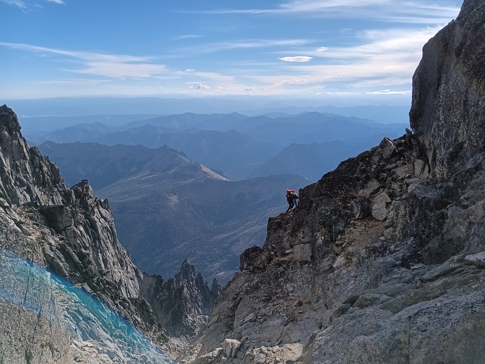

This project is a dedicated to a simple but commonly unknown fact: the region of the world known as Cascadia or the Pacific Northwest is, in terms of history, culture, and primarily natural beauty, the greatest place on earth, trumped by nothing. With current political land divisions, this region takes up all of Washington state, along with much of Oregon, Idaho, Northern California, and much of British Columbia. However, Washington, with the combination of the High Cascades, the impenetrable Olympic mountains, the Salish Sea and Puget Lowlands, the Cascade Volcanoes, and the Columbia River and Plateau, remains the center and source of the whole region.
However, not only does much of the nation and world at large know little or even nothing about this area, even those who are lucky enough to reside in the state have little knowledge. A simple biannual trip to one of the major mountain passes does not reveal the full extent of the state; not even close. The occasional journey to Paradise or Sunrise on Mount Rainier shows nothing of the state at large. Visiting the Hoh Rainforest does not even touch on how truly diverse and unique this state is. We who live or have lived here generally take for granted what is actually unfathomably unique.
But to explain this to those who have not experienced it for themselves is a difficult task. You can not put into words the wonders of this region. Hence, only through photography and detailed explanation can one show a friend or learn for themselves the depth of the state. This site is meant to be the next best thing to visiting the region yourself. It is one thing to explain in words that in Washington you can drive through from beach to rainforest to fjord to high mountain passes to desert and to prairie in the span of one days journey, and another thing entirely to show it in pictures.
Therefore, let this site be the evident proof of what I have been insisting for years: Washington state is not only the greatest state in the Union, but this state and the region is the singular greatest place on our earth.
